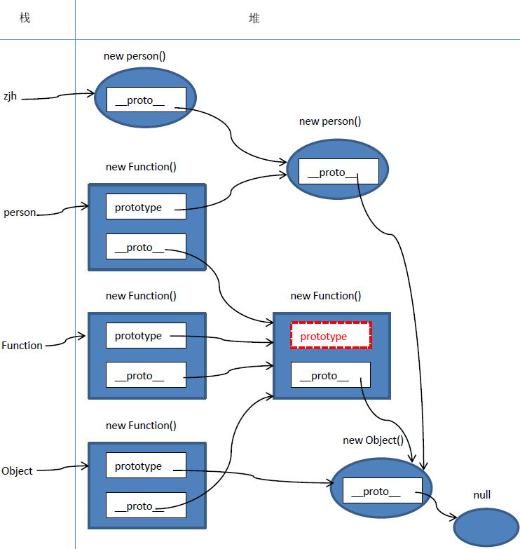
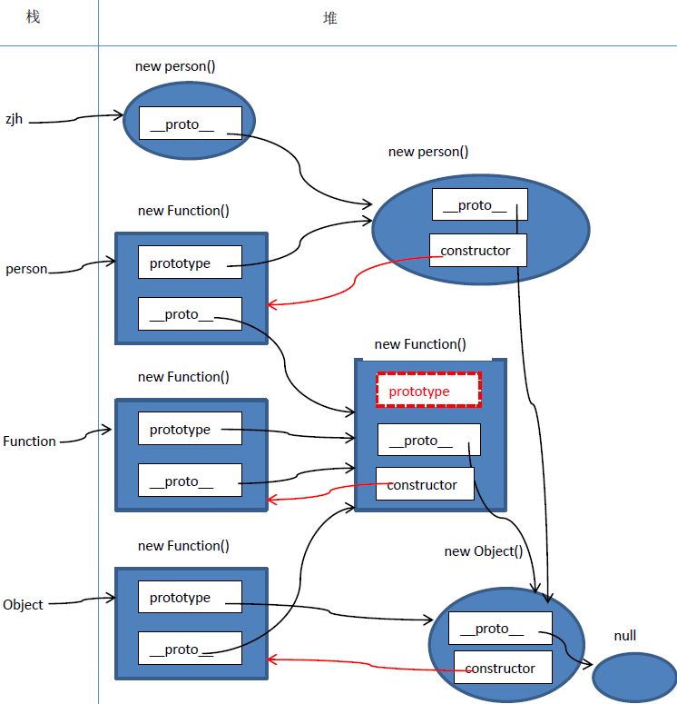
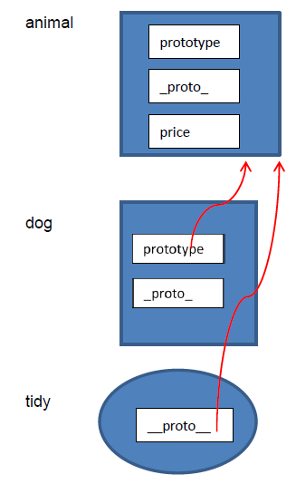

prototype
prototype预理解(本节结合控制台查看)
js中有两种对象 ， 普通对象 和 函数对象
js自带函数对象 Function 和 Object
Function 和 Object 的构造器都是 Function
Object.prototype 也是一个对象 //所有继承的鼻祖
Function.prototype 则是一个函数对象 function(){ } //比较另类
因此 Object.__proto__ === Function.prototype === function(){ }
而 (function(){ }).prototype 也是一个对象（相当于 new Object()）
所以 Object.__proto__.__proto__ === Object.prototype
所有对象都是 Object.prototype 的属性继承者 ， Object.prototype是鼻祖 ， 它继承谁的属性呢？
而所有一切都来自于无 ， Object.prototype.__proto__ 也就是 null
所以一切的继承来自于无 ， 所有对象可继承的属性 从 Object.prototype 开始 到自由属性结束.
所有通过new Object 或者 { } 出来的对象的构造器都是 Object
所有属性都通过 __proto__属性 继承自 Object.prototype
1.普通对象与函数对象
JavaScript 中，万物皆对象！但对象也是有区别的。分为普通对象和函数对象，Object ，Function 是JS自带的函数对象。下面举例说明
console.log("%c 1.普通对象与函数对象","color: #db214c;font-size: 20px");
function f1(){
this.name = "我是f1的name";
};
var f2 = function(){};
var f3 = new Function('str','console.log(str)');
var o3 = new f1(); //实例化对象 ,o3的所有属性皆继承自f1.prototype
console.log(o3.name);
console.log(o3.__proto__ === f1.prototype);
console.log(o3.constructor.prototype === f1.prototype);
var o1 = {};
var o2 =new Object();
console.log(typeof Object); //function
console.log(typeof Function); //function
console.log(typeof o1); //object
console.log(typeof o2); //object
console.log(typeof o3); //object
console.log(typeof f1); //function
console.log(typeof f2); //function
console.log(typeof f3); //function
在上面的例子中 o1 o2 o3 为普通对象，f1 f2 f3 为函数对象。怎么区分，其实很简单，凡是通过 new Function() 创建的对象都是函数对象，其他的都是普通对象。f1,f2,归根结底都是通过 new Function()的方式进行创建的。Function Object 也都是通过 New Function()创建的。
2.原型对象
在JavaScript 中，每当定义一个对象（函数）时候，对象中都会包含一些预定义的属性。其中函数对象的一个属性就是原型对象 prototype。注：普通对象没有prototype,但有__proto__属性。
原型对象其实就是普通对象（Function.prototype除外,它是函数对象，但它很特殊，他没有prototype属性（前面说道函数对象都有prototype属性））。看下面的例子：
console.log("%c 2.原型对象","color: #db214c;font-size: 20px");
function f1(){};
console.log(f1.prototype); //f1{}
console.log(typeof f1. prototype); //Object
console.log(typeof Function.prototype); // Function，这个特殊
console.log(typeof Object.prototype); // Object
console.log(typeof Function.prototype.prototype); //undefined
从这句console.log(f1.prototype)1{}的输出就结果可以看出，f1.prototype就是f1的一个实例对象。就是在f1创建的时候,创建了一个它的实例对象并赋值给它的prototype，基本过程如下：
注意 ： 这点是错误的 *******
f1.prototype不是f1的一个实例化对象，每个函数的prototype属性就是指向该函数的原型对象
var temp = new f1();
console.log(f1.prototype === temp.__proto__); //每个对象在创建时都会有一个__proto__属性，该属性指向创建它的函数对象的原型对象
//那原型对象是用来做什么的呢？主要作用是用于继承。举了例子：
var person = function(name){
this.name = name;
};
person.prototype.getName = function(){
console.log(this.name);
};
var zjh = new person("zhangjiahao");
zjh.getName(); //zhangjiahao
从这个例子可以看出，通过给person.prototype设置了一个函数对象的属性，那有person实例（例中：zjh）出来的普通对象就继承了这个属性。具体是怎么实现的继承，就要讲到下面的原型链了
3.原型链
JS在创建对象（不论是普通对象还是函数对象）的时候，都有一个叫做__proto__的内置属性，用于指向创建它的函数对象的原型对象prototype。以上面的例子为例：
console.log("%c 3.原型链","color: #db214c;font-size: 20px");
console.log(zjh.__proto__ === person.prototype) //true
//同样，person.prototype对象也有__proto__属性，它指向创建它的函数对象（Object）的prototype
console.log(person.prototype.__proto__ === Object.prototype) //true
//继续，Object.prototype对象也有__proto__属性，但它比较特殊，为null
console.log(Object.prototype.__proto__) //null
//我们把这个有__proto__串起来的直到Object.prototype.__proto__为null的链叫做原型链。如图1-1

4.内存结构图
为了更加深入和直观的进行理解，下面我们画一下上面的内存结构图1-2

疑点解释：
1.Object.__proto__ === Function.prototype // true
Object是函数对象，是通过new Function()创建，所以Object.__proto__指向Function.prototype。
2.Function.__proto__ === Function.prototype // true
Function 也是对象函数，也是通过new Function()创建，所以Function.__proto__指向Function.prototype。
自己是由自己创建的，好像不符合逻辑，但仔细想想，现实世界也有些类似，你是怎么来的，你妈生的，你妈怎么来的，你姥姥生的，……类人猿进化来的，那类人猿从哪来，一直追溯下去……，就是无，（NULL生万物）
正如《道德经》里所说“无，名天地之始”。
3.Function.prototype.__proto__ === Object.prototype //true
其实这一点我也有点困惑，不过也可以试着解释一下。
Function.prototype是个函数对象，理论上他的__proto__应该指向
Function.prototype，就是他自己，自己指向自己，没有意义。
JS一直强调万物皆对象，函数对象也是对象，给他认个祖宗，指向Object.prototype。Object.prototype.__proto__ === null，保证原型链能够正常结束。
5.constructor--构造器
原型对象prototype中都有个预定义的constructor属性，用来引用它的函数对象。这是一种循环引用
person.prototype.constructor === person //true
Function.prototype.constructor === Function //true
Object.prototype.constructor === Object //true
//完善后结构图1-3

6.总结
1.原型和原型链是JS实现继承的一种模型。
2.原型链的形成是真正是靠__proto__ 而非prototype
要深入理解这句话，我们再举个例子，看看前面你真的理解了吗？
var animal = function(){};
var dog = function(){};
animal.price = 2000;//
dog.prototype = animal;
var tidy = new dog();
console.log(dog.price) //undefined
console.log(tidy.price) // 2000
//为什么呢？画一下内存图1-4

这说明什么问题呢，执行dog.price的时候，发现没有price这个属性，虽然prototype指向的animal有这个属性，但它并没有去沿着这个“链”去寻找。同样，执行tidy.price的时候，也没有这个属性，但是__proto__指向了animal，它会沿着这个链去寻找，animal中有price属性，所以tidy.price输出2000。由此得出，原型链的真正形成是靠的__proro__，而不是prototype。
因此，如果在这样指定dog.__proto__ = animal。那dog.price = 2000。